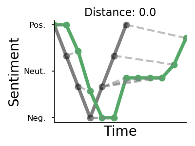

Example Narratives: Thorstad, Graci, & Fivush (In prep.)
In the manuscript, we report a method for analyzing the emotional trajectory of narratives. Here, we present some example narratives from the dataset.
For each narrative, the horizontal axis represents sentences in the narrative, and the vertical axis is the calculated sentiment. You can also hover over points in
the graph to see the text of each sentence. You can click on a link below to get started. You can also view the the shape of each cultural trajectory and a description of some of the methods at the bottom of the page.
We fit the narratives to the cultural trajectories using a technique known as dynamic time warping(Berndt & Clifford, 1994). In the figure below, the green curve is a real narrative from the dataset, and the black curve is the man-in-a-hole cultural trajectory. The green curve can be easily warped into the black curve, suggesting the green curve has a similar shape to the black curve. Note that dynamic time warping allows us to detect that the curves have similar shape, even though they have different length (for comparison, the Euclidean distance between the curves is undefined).
